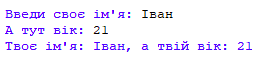

Вітаю! От і завершено перший модуль, де ми познайомилися із середовищем розробки та тим, як виводити текст в консоль для користувача. Ми можемо використовувати функцію input для того, аби запитати у користувача ввести якесь значення. А що якщо нам потрібно зберегти це знаяення? Ну от наприклад ми просимо у користувача ввести його ім'я та вік і після показати йому введену інформацію? Розглянемо приклад, як це можна зробити:
print(f"Твоє ім'я: {input('Введи своє ім\'я: ')}, а твій вік: {input('А тут вік: ')}")

Погодься, що виглядає досить складно. Який тут може бути вихід? Правильно - використання змінних. У житті ми використовуємо різні речі, такі як блокнот, додаток на телефоні для нотаток тощо. Там ми зберігаємо важливі для нас дані для того, щоб їх не втратити. У програмуванні досить схоже. Розробники для того, щоб зберегти якесь значення, використовують змінні. І пайтон їх також підтримує. Фактично, ми говоримо, що нам потрібно створити якусь змінну (тобто виділити якесь місце на аркуші паперу) щоб надалі там можна було зберігати якесь значення. Виглядає це наступним чином:
user_name = input('Привіт. Введи своє ім\'я: ')
user_age = input('А тепер свій вік: ')
print(f"Тебе звуть: {user_name}, а також тобі {user_age} років")

Як можна помітити, хоть тут і більше коду, але він зрозуміліше для сприйняття. При написанні будь якого коду, навіть просто тестовий код під час навчання, намагайся писати зрозумілий код, адже в майбутньому тобі цей навик стане в нагоді. Далі буде )